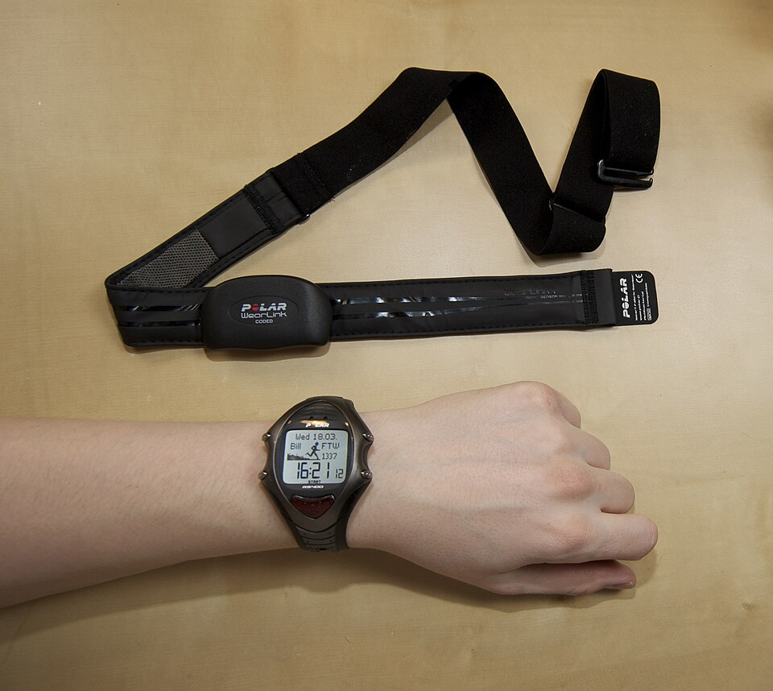

Handball Games vs. High-Intensity Interval Training for Better Health
The researchers recruited 90 young adults (45 men and 45 women) with an average age of about 20 years. Everyone was sedentary and had not been doing regular exercise. The students were randomly split into three equal groups of 30 (Han et al., 2026).
| Group | People | What They Did |
|---|---|---|
| SSG | 30 | Small-sided handball games |
| HIIT | 30 | Sprint intervals on an outdoor track |
| Control (CG) | 30 | No structured training |
Both training groups worked out 3 times a week (Monday, Wednesday, and Friday) for 16 weeks. Each session followed the same steps (Han et al., 2026):

Participants wore heart rate monitors during training and rated how hard each session felt on a 0-10 scale (called the rating of perceived exertion, or RPE). The HIIT group had a slightly higher average heart rate and rated their workouts as harder than the SSG group. In both groups, heart rate and effort ratings slowly dropped over the 16 weeks, which shows their bodies were adapting (Han et al., 2026).
| Measure | SSG Men | SSG Women | HIIT Men | HIIT Women |
|---|---|---|---|---|
| Average heart rate (beats per minute) | 172.5 | 173.0 | 174.5 | 176.8 |
| Effort rating at start (0-10) | 6.9 | 7.1 | 7.7 | 7.7 |
The researchers also used a questionnaire to track total weekly activity, measured in MET-minutes per week. The control group stayed about the same, which shows the improvements in the training groups came from the training itself and not from extra exercise on the side (Han et al., 2026).
| Group | Start of Study | End of Study (16 weeks) |
|---|---|---|
| SSG | 435.3 | 1145.3 |
| HIIT | 442.1 | 1206.3 |
| Control | 443.2 | 488.8 |
Values are average MET-minutes per week (Han et al., 2026).